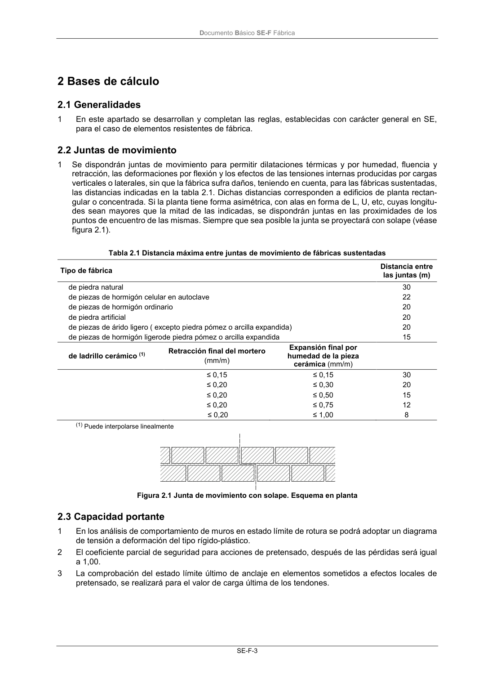

DB-SE-F Fábrica · edición 2019-12-20 · capa oficial
Documento DB-SE-F-oficial · SHA-256 del PDF e3e0805c3b4c307519c26dc34c3fdbf143d842edd013c91b0f52d2c73403d91c
Copia fiel del PDF fuente · Fuente oficial
Ficha de la disposición en la fuente oficial
Formatos: JSON del segmento · Markdown
2.3 Capacidad portante 1 En los análisis de comportamiento de muros en estado límite de rotura se podrá adoptar un diagrama de tensión a deformación del tipo rígido-plástico. 2 El coeficiente parcial de seguridad para acciones de pretensado, después de las pérdidas será igual a 1,00. 3 La comprobación del estado límite último de anclaje en elementos sometidos a efectos locales de pretensado, se realizará para el valor de carga última de los tendones. Documento Básico SE-F Fábrica SE-F-4
